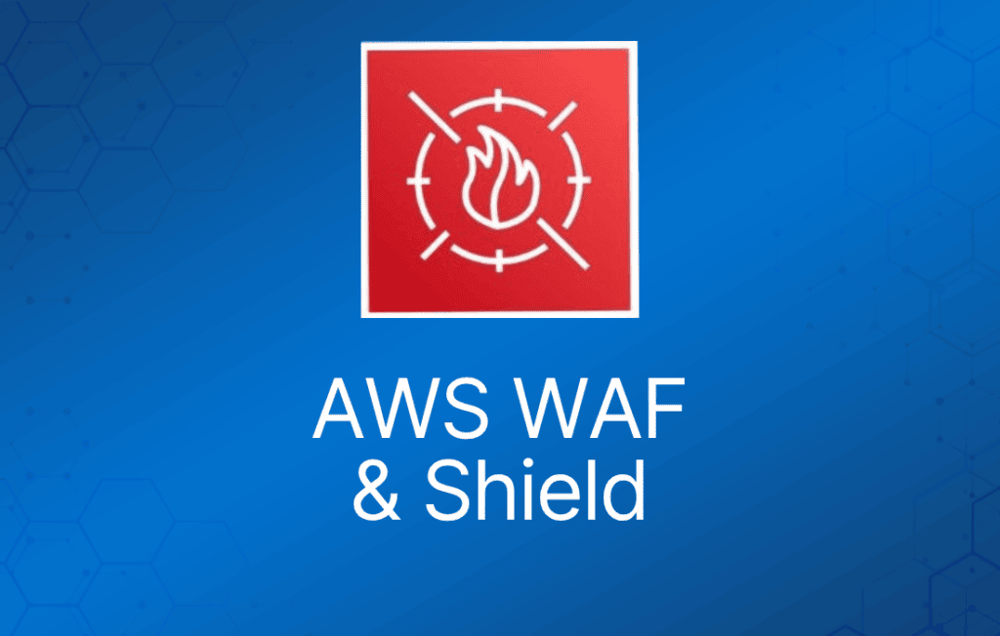

AWS WAF 和 AWS Shield 帮助保护你的 AWS 资源免受 Web 漏洞利用和 DDoS 攻击。
AWS WAF 是一项 Web 应用防火墙服务，帮助保护你的 Web 应用免受常见漏洞利用的影响，这些攻击可能影响应用可用性、危害安全性或消耗过多资源。
AWS Shield 为你的 AWS 资源提供增强的 DDoS 攻击防护。你可以获得 DDoS 响应团队 24/7 的支持，以及对 DDoS 事件的详细可见性。
下面我们详细介绍每个服务。
AWS Web Application Firewall (WAF)
AWS WAF 是一种 Web 应用防火墙，帮助保护你的 Web 应用免受常见 Web 漏洞利用的影响，这些攻击可能影响应用可用性、危害安全性或消耗过多资源。
AWS WAF 允许你配置规则，根据你定义的条件来允许、阻止或监控（计数）Web 请求，从而帮助保护 Web 应用免受攻击。
这些条件包括 IP 地址、HTTP header、HTTP body、URI 字符串、SQL 注入和跨站脚本攻击。
可以使用字符串匹配条件，根据请求中出现的字符串来允许或阻止 Web 请求。
例如，AWS WAF 可以匹配请求的以下部分中的值：
- Header —— 指定的请求 header，例如 User-Agent 或 Referer header。
- HTTP method —— HTTP 方法，表示请求要求源站执行的操作类型。CloudFront 支持以下方法：DELETE、GET、HEAD、OPTIONS、PATCH、POST 和 PUT。
- Query string —— URL 中 ? 字符之后出现的部分（如果有）。
- URI —— 请求的 URI 路径，用于标识资源，例如 /images/daily-ad.jpg。
- Body —— 请求中包含要作为 HTTP 请求体发送到 Web 服务器的任何附加数据的部分，例如表单数据。
- 单个查询参数（仅值）—— 你定义为查询字符串一部分的任何参数。
- 所有查询参数（仅值）—— 同上，但会检查查询字符串中的所有参数。
新规则可以在几分钟内部署完毕，让你能够快速响应不断变化的流量模式。
当 AWS 服务收到网站的请求时，请求会被转发给 AWS WAF，根据定义的规则进行检查。
一旦请求满足规则中定义的条件，AWS WAF 会根据你定义的操作指示底层服务阻止或允许该请求。
使用 AWS WAF 你只需按实际使用量付费。
AWS WAF 的定价基于你部署的规则数量以及 Web 应用接收的 Web 请求数量。
没有预付费承诺。
AWS WAF 与 Amazon CloudFront 和 Application Load Balancer (ALB) 服务紧密集成。
当你在 Amazon CloudFront 上使用 AWS WAF 时，规则会在全球所有靠近终端用户的 AWS 边缘站点运行。
这意味着安全性不会以牺牲性能为代价。
被阻止的请求在到达你的 Web 服务器之前就被拦截了。
当你在 Application Load Balancer 上使用 AWS WAF 时，规则在区域内运行，可用于保护面向互联网以及内部的负载均衡器。
Web 流量过滤
AWS WAF 允许你创建规则，基于 IP 地址、HTTP header 和 body 或自定义 URI 等条件过滤 Web 流量。
这为你提供了额外的一层保护，防止试图利用自定义或第三方 Web 应用漏洞的 Web 攻击。
此外，AWS WAF 让创建阻止常见 Web 攻击（如 SQL 注入和跨站脚本）的规则变得很容易。
AWS WAF 允许你创建一组集中式规则，并将其部署到多个网站上。
这意味着在拥有许多网站和 Web 应用的环境中，你可以创建一套规则并在多个应用之间复用，而无需在每个要保护的应用上重新创建规则。
全功能 API
AWS WAF 可以完全通过 API 进行管理。
这让组织能够自动创建和维护规则，并将其纳入开发和设计流程中。
例如，对 Web 应用有深入了解的开发人员可以将创建安全规则作为部署流程的一部分。
这种将安全性融入开发流程的能力，避免了应用团队和安全团队之间为确保规则保持最新而进行的复杂交接。
AWS WAF 还可以通过 AWS CloudFormation 示例模板自动部署和配置，这些模板允许你描述要为通过 Amazon CloudFront 分发的 Web 应用部署的所有安全规则。
AWS WAF 与 Amazon CloudFront 集成，后者支持 AWS 之外的自定义源站——这意味着你可以保护未托管在 AWS 上的网站。
对 IPv6 的支持使 AWS WAF 能够检查来自 IPv6 和 IPv4 地址的 HTTP/S 请求。
实时可见性
AWS WAF 提供实时指标，并捕获原始请求，其中包括 IP 地址、地理位置、URI、User-Agent 和 Referer 等详细信息。
AWS WAF 与 Amazon CloudWatch 完全集成，当超过阈值或发生攻击时，可以轻松设置自定义告警。
这些信息提供了有价值的情报，可用于创建新规则以更好地保护应用。
AWS Shield
AWS Shield 是一项托管的分布式拒绝服务（DDoS）防护服务，用于保护运行在 AWS 上的应用。
AWS Shield 提供持续在线的检测和自动内联缓解功能，可最大限度减少应用停机时间和延迟，因此无需联系 AWS Support 即可获得 DDoS 防护。
AWS Shield 有两个层级——Standard 和 Advanced。
AWS Shield Standard
所有 AWS 客户都可以免费享受 AWS Shield Standard 的自动防护。
AWS Shield Standard 可防御针对网站或应用的最常见、最频繁发生的网络层和传输层 DDoS 攻击。
将 AWS Shield Standard 与 Amazon CloudFront 和 Amazon Route 53 结合使用时，你可以获得针对所有已知基础设施（第 3 层和第 4 层）攻击的全面可用性防护。
AWS Shield Advanced
为针对运行在 Amazon Elastic Compute Cloud (EC2)、Elastic Load Balancing (ELB)、Amazon CloudFront、AWS Global Accelerator 和 Amazon Route 53 资源上的应用的攻击提供更高级别的防护。
除了 Standard 自带的网络层和传输层防护外，AWS Shield Advanced 还提供针对大型复杂 DDoS 攻击的额外检测和缓解、近乎实时的攻击可见性，以及与 Web 应用防火墙 AWS WAF 的集成。
AWS Shield Advanced 还让你可以 24×7 访问 AWS DDoS 响应团队（DRT），并针对 DDoS 攻击导致的 Amazon Elastic Compute Cloud (EC2)、Elastic Load Balancing (ELB)、Amazon CloudFront、AWS Global Accelerator 和 Amazon Route 53 费用激增提供防护。
AWS Shield Advanced 在全球所有 Amazon CloudFront、AWS Global Accelerator 和 Amazon Route 53 边缘站点均可用。
源站服务器可以是 Amazon S3、Amazon Elastic Compute Cloud (EC2)、Elastic Load Balancing (ELB)，或 AWS 之外的自定义服务器。
AWS Shield Advanced 包含 DDoS 成本防护，可防止因 DDoS 攻击导致受保护的 Amazon EC2、Elastic Load Balancing (ELB)、Amazon CloudFront、AWS Global Accelerator 或 Amazon Route 53 使用量激增而产生扩容费用。
如果任何受 AWS Shield Advanced 保护的资源因响应 DDoS 攻击而扩容，你可以通过常规 AWS Support 渠道申请费用抵扣。